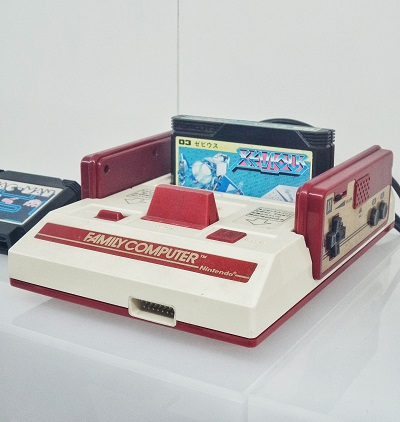
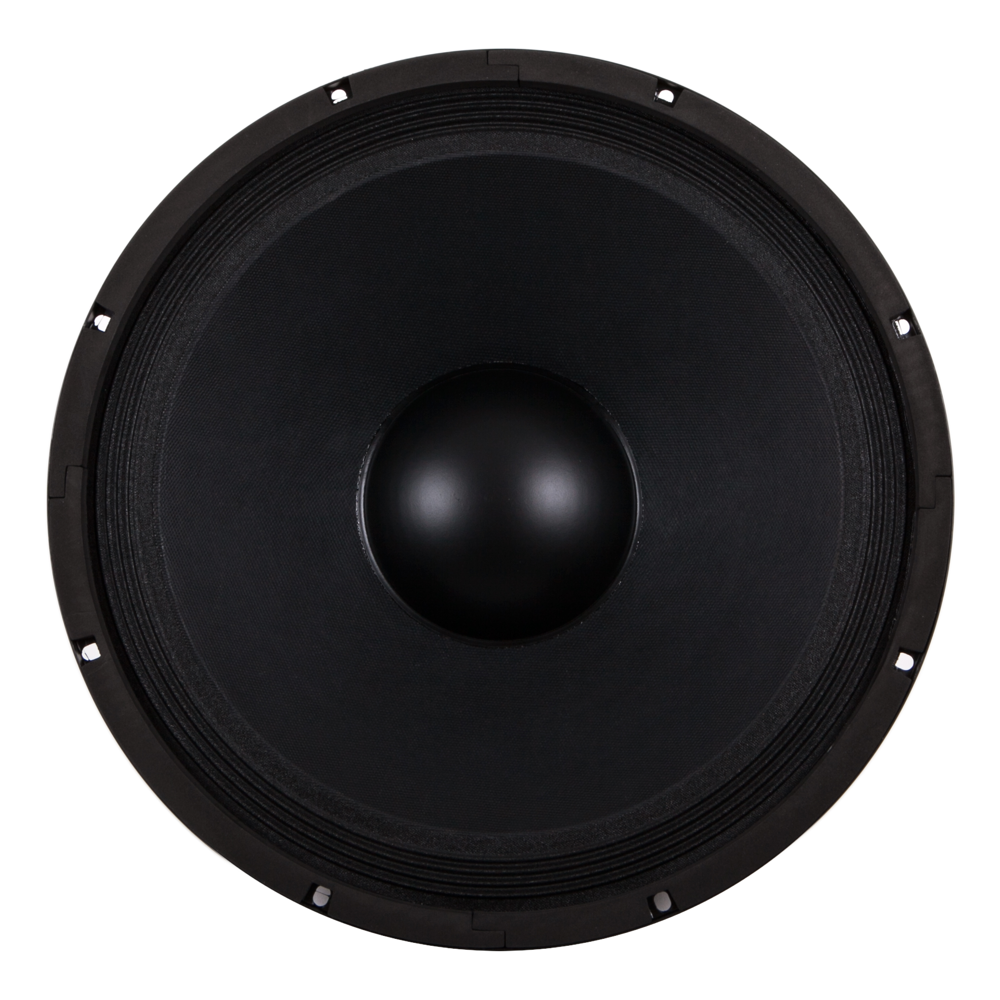

ALL-IN-ONE MEDIA ENGINE
Your Future is PlayVer
Выберите режим воспроизведения выше: смотрите видео, слушайте авторские треки со звуковым анализатором или подключайтесь к мировым радиостанциям.

RU1ZY BEATS // 320 KBPS
SPIN THAT!

LIVE BROADCAST
Nightwave Plaza
Synthwave / Vaporwave 24/7